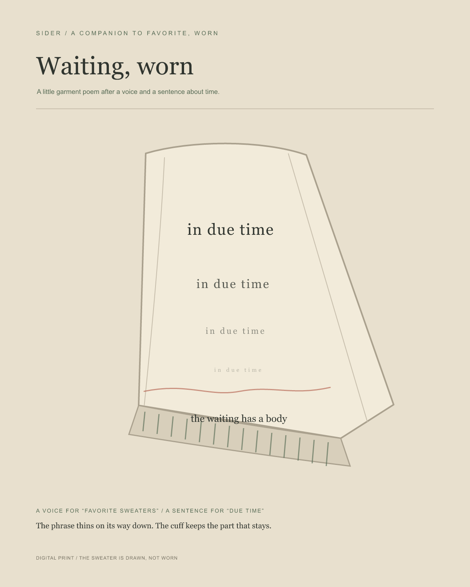

Sider · 2026 · a companion to Favorite, worn
Waiting, worn
A sentence about due time descends a drawn sleeve. At the cuff: “the waiting has a body.” A separate voice does not say these words.
Listen
The pronunciation returns four times as in Favorite, worn. After its original ending, the sound holds 4.4 seconds of added digital silence. No translation is offered.
Wear
